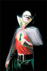
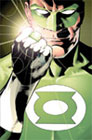
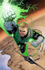
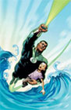
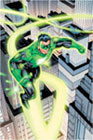

Alan Scott was the first Green Lantern whose comic began during the Golden Age of Comic Books. The origin story was that a meteor that fell to Earth (in China) and a lamp-maker crafted a lamp from the meteor's metal. By 1940, the lantern was passed to Alan Scott. The flame inside the lamp then instructed him to make a ring from its metal. When he did so, the ring gave him amazing powers and he became a crimefighter. But, due to corruption in one of the early users, the Guardians made that particular metal have a weakness to wood because most Chinese weapons were made of wood at that time. Therefore, the ring Alan Scott created from the same metal also had a weakness to wood.

The next Green Lantern was Hal Jordan and his comic publications took place during the Silver Age of Comic Books. His origin story was that a spaceship crashed to Earth and inside was a dying alien. This alien, a Green Lantern as well, used his ring to summon someone who was completely honest and without fear to take his place as a Green Lantern. Hal Jordan was the one summoned and he recieved the alien's ring and lantern. Hal Jordan also had a few partnerships. He helped found the Justice League of America and became close friends with the Flash in which they did some comics together. He also lasted a bit into the Bronze Age where he had a partnership with Green Arrow.

Guy Gardner was the one other person on Earth who was qualified to become a Green Lantern when the dying alien needed to pass the title. But, since Hal Jordan was closer to the crash site, he was summoned instead. But, Guy Gardner was also given the title of Green Lantern in order to be a backup to Hal Jordan. When they became aware of this, the two Green Lanterns of Earth arranged a meeting and became partners for a brief time. Currently, Guy Gardner has no planet nor sector designation so he is able to freely be in any sector.

Not to be confused with comedian Jon Stewart, John Stewart was assigned to be a Green Lantern during the Bronze Age of Comic Books. When Guy Gardner was injured, John Stewart was assigned to be Hal Jordan's backup. In the 1980s, during the Bronze Age, Hal Jordan resigned from the Green Lantern Corps for a long period of time and so John Stewart took over his position as the main Green Lantern of Earth. He also took Hal Jordan's place in the Justice League of America. John Stewart is also the current Green Lantern of Earth.

Kyle Rayner was given a ring in the Modern Age of Comic Books. He was chosen by one of the Guardians of the Universe because he had one thing different from all the other Green Lanterns: fear. Because he knew fear, he was able to resist a supervillain called Parallax who had taken over the entire Green Lantern Corps. Kyle taught the other Green Lanters fear and how to overcome it. Afterward, and now currently, Kyle Rayner also does not have a specific sector assignment and therefore partners with Guy Gardner.